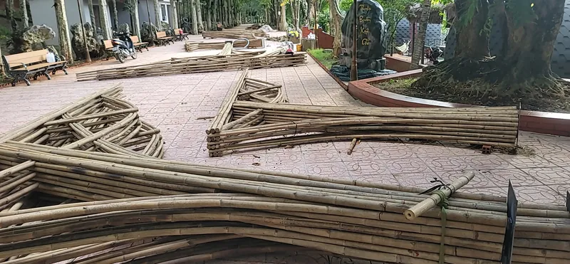
Giữa khuôn viên xanh mát của Spa Amiana Nha Trang, Tre Việt Building thi công một quán cafe dựng hoàn toàn bằng tre tầm vông uốn cong: mái dốc lợp lá, những cột tre bó lại rồi tỏa ra như tán cây để đỡ mái, không gian mở đón gió biển suốt ngày.
Đây là công trình đòi hỏi tay nghề cao vì toàn bộ khung chịu lực là những đường cong. Bài viết này ghi lại dự án từ ý tưởng thiết kế, cách đội thợ uốn và ghép khung tầm vông tại công trình, đến từng bước lắp dựng và hoàn thiện.
Tổng Quan Dự Án
- Công trình: quán cafe tre tầm vông uốn cong của Spa Amiana.
- Địa điểm: Spa Amiana, Nha Trang, Khánh Hòa.
- Hạng mục: thi công trọn gói khung vì tre uốn cong, cột tre bó, mái lá.
- Vật liệu chính: tre tầm vông đã qua xử lý chống mối mọt, lá lợp mái.
- Đơn vị thi công: Tre Việt Building.
Amiana là thương hiệu nghỉ dưỡng cao cấp tại Khánh Hòa. Khu spa vốn đã dùng nhiều chất liệu tre: trần sảnh và quầy lễ tân ốp tre tầm vông, đèn treo đan từ tre. Quán cafe tre uốn cong được thiết kế để nối tiếp tinh thần đó ra không gian ngoài trời.
- 01
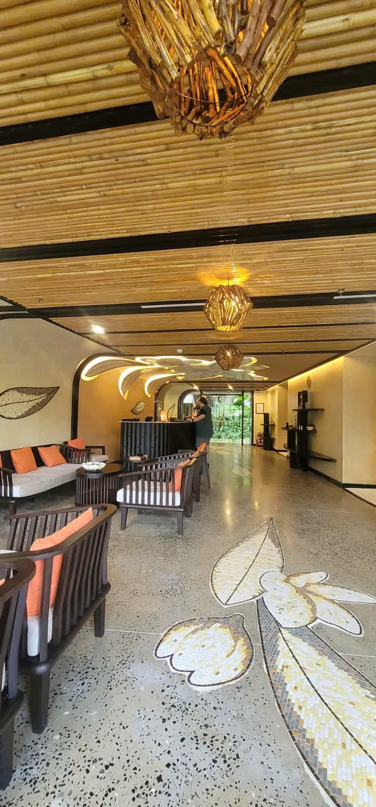
Sảnh spa với trần tre tầm vông
- 02
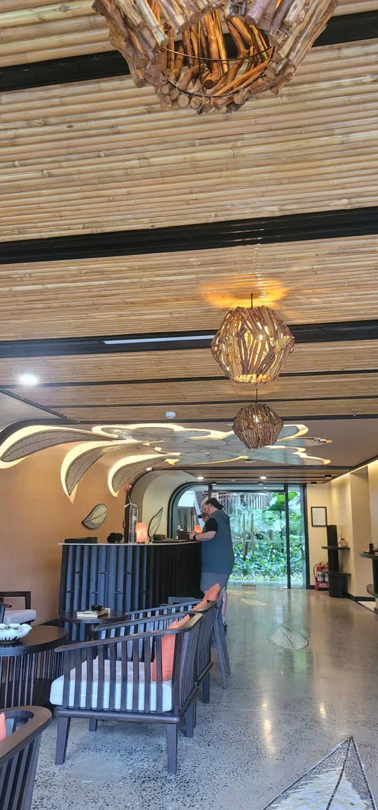
Quầy lễ tân dưới trần tre
Ý Tưởng Thiết Kế
Quán cafe được thiết kế theo dạng nhà tre bán lộ thiên. Phía sau là một khối tường đá chứa quầy bar, kho và khu vệ sinh, đồng thời làm điểm tựa cho mái. Phía trước là khoảng ngồi mở hoàn toàn ra cảnh quan.
Điểm nhấn của công trình là hệ khung vì tầm vông: mỗi cột bó từ nhiều cây tre, phía trên uốn cong tỏa ra như tán cây, đỡ mái dốc lợp lá dày. Gió đi xuyên qua các khung vì nên không gian luôn thoáng mát, ánh sáng lọt qua khe tre tạo cảm giác như ngồi dưới một rặng cây lớn.
- 01
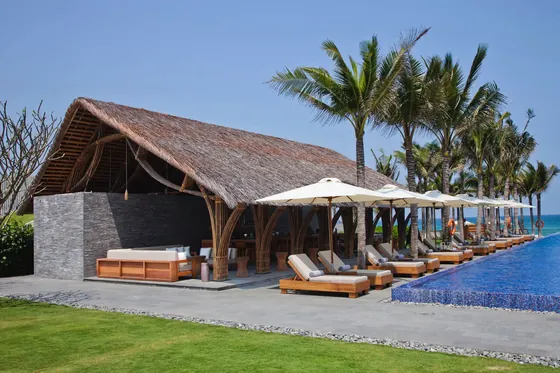
Mái dốc lợp lá, mở ra cảnh quan
- 02
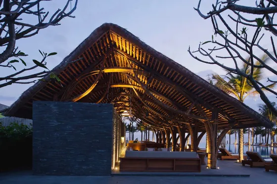
Khung tre lên đèn lúc hoàng hôn
- 03
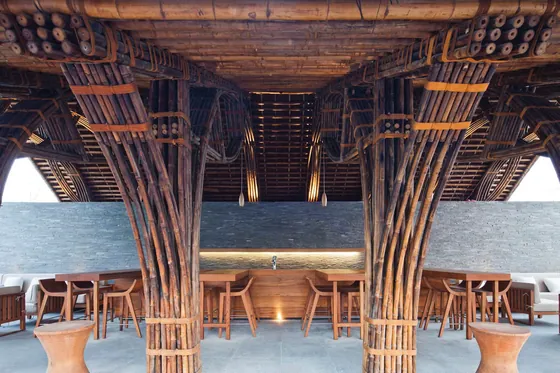
Cột tre bó, uốn tỏa như tán cây
- 04
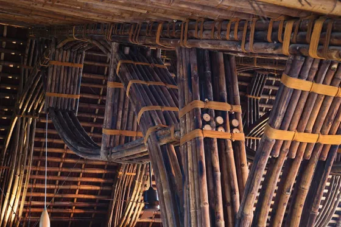
Chi tiết liên kết khung vì tre
- 05
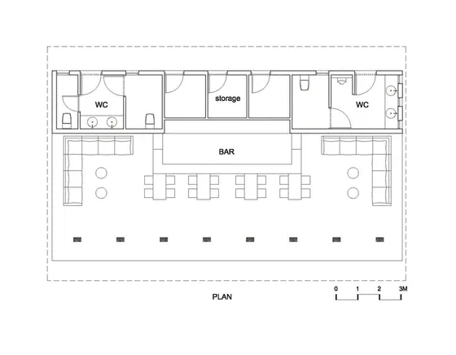
Mặt bằng: quầy bar, kho, WC, khoảng ngồi
Uốn Và Ghép Khung Tầm Vông Tại Công Trình
Điểm khó nhất của công trình là hệ khung vì cong. Thay vì uốn từng cây trên cao, đội thợ Tre Việt Building uốn tầm vông, bó thành cột và ghép hoàn chỉnh từng khung vì ngay trên mặt đất. Khi các khung đã đúng hình, mới đưa lên lắp dựng và liên kết với nhau. Cách làm này giúp đường cong đều, mối nối chắc và rút ngắn thời gian thi công tại chỗ.
- 01
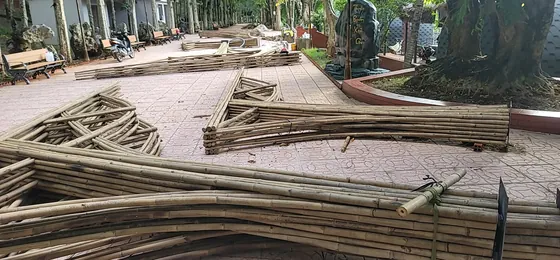
Khung vì tầm vông uốn sẵn trên mặt đất
- 02
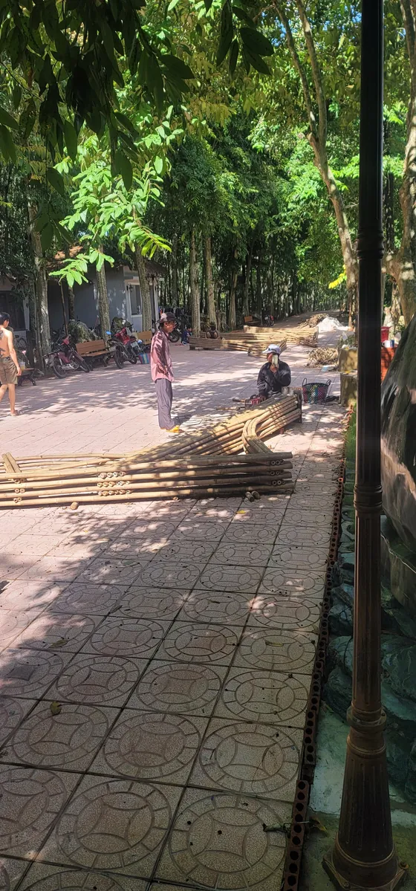
Thợ bó, ghép tre tại bãi thi công
- 03
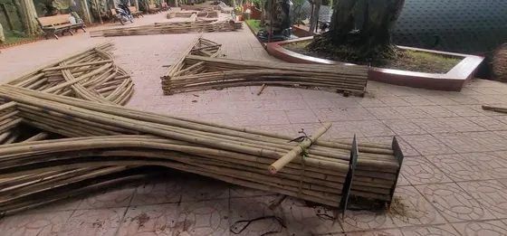
Bó cột tầm vông uốn cong, chân có bản mã thép
- 04
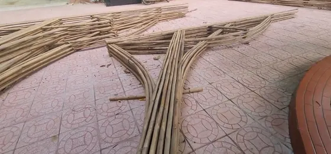
Khung vì uốn tỏa ghép hoàn chỉnh
Các Bước Thi Công
-
01Bước 1
Khảo sát và chốt phương án
Khảo sát vị trí đặt quán trong khuôn viên spa, hướng gió biển, hướng nắng và nền đất. Thống nhất với chủ đầu tư bố cục quầy bar, khoảng ngồi và kiểu khung vì tre uốn cong.
Chốt phương án thiết kế -
02Bước 2
Chọn và xử lý tre tầm vông
Tuyển tre đủ tuổi, thẳng, đều kích thước. Tre được xử lý chống mối mọt và hong khô tại xưởng trước khi chuyển đến công trình. Xem chi tiết 7 bước xử lý tre tầm vông.
Tre đã xử lý chống mối mọt -
03Bước 3
Uốn tre, bó cột và ghép khung vì
Uốn tầm vông theo đường cong thiết kế, bó nhiều cây thành cột và ghép hoàn chỉnh từng khung vì ngay trên mặt đất. Chân cột liên kết bản mã thép để neo chắc xuống móng.
Khung vì đúng hình trước khi dựng -
04Bước 4
Lắp dựng và liên kết khung
Đưa từng khung vì lên vị trí, cân chỉnh và liên kết các khung với nhau thành hệ mái hoàn chỉnh. Mỗi mối nối được xử lý tỉ mỉ để khung vừa chắc vừa giữ được đường cong mềm mại.
Hệ khung mái chịu lực -
05Bước 5
Lợp mái, hoàn thiện và bàn giao
Lợp lá, phủ lớp bảo vệ bề mặt tre, lắp đèn. Nghiệm thu cùng chủ đầu tư, hướng dẫn bảo dưỡng và bảo hành theo hợp đồng.
Bàn giao, bảo hành dài hạn
Vì Sao Spa Amiana Chọn Tre Tầm Vông Uốn Cong?
- Hợp khí hậu ven biển: tre tầm vông được xử lý đủ thời gian, đúng kỹ thuật sẽ chịu ẩm tốt, hạn chế cong vênh khi nhiệt độ thay đổi và kháng mối mọt hiệu quả.
- Mát tự nhiên: mái lá dày cùng khung tre thông thoáng giúp quán luôn có bóng mát, gió đi xuyên qua mà không cần đóng kín.
- Đồng bộ với không gian spa: sắc vàng ấm của tre nối liền với trần tre ở sảnh và quầy lễ tân, tạo cảm giác thư thái, gần gũi thiên nhiên cho khách.
- Điểm nhấn riêng: mỗi khung vì uốn cong là một tác phẩm thủ công, không lặp lại, giúp quán trở thành góc check-in của khu nghỉ dưỡng.
Nhận Tư Vấn & Báo Giá Miễn Phí
Bạn muốn một quán cafe, quầy bar hay khu nghỉ ngơi bằng tre tầm vông uốn cong như dự án tại Spa Amiana Nha Trang? Hãy liên hệ Tre Việt Building để được khảo sát và tư vấn phương án phù hợp.
Nhận tư vấn & báo giá miễn phí
CÔNG TY TNHH TRE VIỆT BUILDING
Trụ sở917 Phạm Văn Đồng, Phường Linh Xuân, TP. Hồ Chí Minh
Nhà máy sản xuấtTổ 6, Ấp Phú Hợp, Xã Phú Lâm, Tỉnh Đồng Nai
Hotline/Zalo087.6915.999
Emailtreviet23@gmail.com
Websitetretruc.com.vn